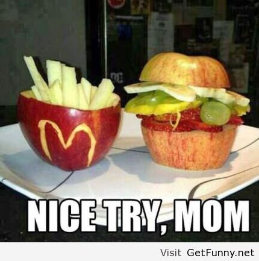

Return home
The Infamous McVegan
"Mom I want McDonalds!"
"No, we have McDonalds at home."
McDonalds at home:

It's finger eatin' vegan!
The ultimate meal that every mom pulled out when her kids don't eat vegetables.
Best served with vegetables fermented in the fridge for a month.
Ingredients:
- 2 apples of choice, ideally freshly grown at home.
- A few fermented pickles (in a hard-to-open jar is ideal)
- 1 tomato
- 1 banana
- (Optional) salad 💀
Instructions:
- Cut an apple into half, while only the top of the other apple is cut.
- Make your vegan fries by cutting the inside of the apple leaving the skin out, cut the inside into small chunks and put it in the skin.
- While having your apple patty open, put all the remaining ingredients in.
- Put the remaining apple patty on top.